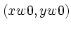
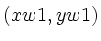
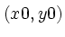
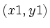

Well-chosen annotations can make a good plot better. In the previous chapter, we saw how labels can be placed anywhere on a plot, using either data or window coordinates. plt also allows you to draw arbitrary line segments, arrows, and boxes on your plot.
Use the -C and -c (connect) options to draw arbitrary line segments, as follows:
-C xw0 yw0 xw1 yw1
-c x0 y0 x1 y1
These options connect the two points specified by their arguments with a line segment. The -C option connects the points with window coordinates  and . The -c option connects the points with data coordinates  and .
The -A and -a (arrow) options work in the same way as -C and -c, respectively, but they also draw an arrowhead pointing toward the first specified point, or :
-A xw0 yw0 xw1 yw1
-a x0 y0 x1 y1
Note that the size of the arrowhead is determined by the specified point size in the figure (f) font group, or in local override instructions (see figure 11.4).
The -B and -b (box) options similarly accept arguments specifying two points, but in this case the points are diagonally opposite corners of a box (rectangle) that is to be drawn:
-B xw0 yw0 xw1 yw1
-b x0 y0 x1 y1
The -D and -d (dark box) options work in the same way as -B and -b respectively, but boxes drawn when using these options are filled. The filling is black by default, but may be changed by setting the grey level or color in the f (figure) font group (see figure 11.5).
-D xw0 yw0 xw1 yw1
-d x0 y0 x1 y1
Remember that in each case, as with -L and -l, the upper case version of the option takes window coordinates, and the lower case version takes data coordinates.
These options are illustrated in figure 9.1, which was produced using the command:
plt -f flowchart.formatwhere the format file, flowchart.format, contains:
# Define axis ranges, but don't draw the axes. X 0 1 Y 0 1 s xy # Use black, wide lines for figures by default. sf f Cblack,W15,P20 # Draw labels in black 20 point Helvetica Bold. sf l Cblack,P20,Fh-b # Draw the plot title in 24 point Helvetica Bold. t (Fh-b,P24) How to Hack # Draw a green-outlined box and label it. B (Cgreen) .1 .3 .3 .4 L .2 .35 CC Write # Draw an arrow from the right edge of the box. A .4 .35 .3 .35 # Draw a diamond using line segments, and label it. C (Cred) .4 .35 .5 .45 C (Cred) .5 .45 .6 .35 C (Cred) .6 .35 .5 .25 C (Cred) .5 .25 .4 .35 L .5 .35 CC Done? # Draw a line and arrow from the top of the diamond. C .5 .45 .5 .7 A .4 .7 .5 .7 # Label the line and arrow. L .51 .45 LB No # Draw a filled light blue box. D (CLightBlue) .2 .65 .4 .75 # Outline it in dark blue, and label it. B (CDarkBlue) .2 .65 .4 .75 L .3 .7 CC Think! # Draw a line and arrow from this box to the first. C .2 .7 .15 .7 A .15 .4 .15 .7 # Draw an arrow from the right corner of the diamond. A .7 .35 .6 .35 # Label the arrow. L .6 .35 LT Yes # Draw a filled box in 30% grey, and label it in white. D (Cgrey30) .7 .3 .9 .4 L (Cwhite) .8 .35 CC Sleep
The -s option, used in this example to suppress the axes, is
described in the next chapter. The -sf option, used to set the
default characteristics for the figures and labels in the example, is
discussed in chapter 11, beginning on
page ![[*]](crossref.png) .
.